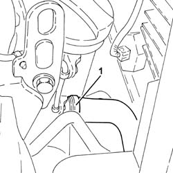
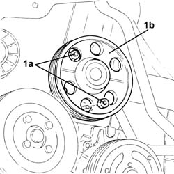
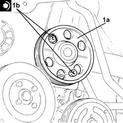

1088C12 water pump - r+r for versions with air conditioner
- Path
- Procedures > 10 ENGINE UNIT > 1088 ENGINE COOLING > 1088C water pump and thermostat > 1088C12 water pump - r+r for versions with air conditioner
- Kind
- repair procedure (removal / refitting; the operation number is the code)
- Applies to
- all engines; all production periods
- Interactive page
- https://sloeber94.github.io/elrnDB-fPnd/en/#/2752541
Applies to: engines: 1.1; all production periods
 Removing
Removing
 Refitting
Refitting1048A10 air cleaner filtering element - replace
5510C30 engine timing sensor - r+r
1092B40 air conditioner compressor/alternator drive belt - r + r
1092A12 crankshaft pulley - r+r for versions with air conditioner
Applies to: engines: 1.2 8v; all production periods
Removing
Refitting1048A10 air cleaner filtering element - replace
5510C30 engine timing sensor - r+r
1092B40 air conditioner compressor/alternator drive belt - r + r
1092A12 crankshaft pulley - r+r for versions with air conditioner
Applies to: engines: 1.3 JTD 16v; all production periods
Removing
RefittingRemove the car from the ramps.
1. Loosen the band and disconnect the lower radiator coolant outlet hose from the radiator.

Applies to: engines: 1.1; all production periods
Refitting
Removing1088C14 water pump - r + r with drive belt removed
1032D12 timing system protective cover(s) - r + r
1092A12 crankshaft pulley - r+r for versions with air conditioner
1092B40 air conditioner compressor/alternator drive belt - r + r
5510C30 engine timing sensor - r+r
Applies to: engines: 1.2 8v; all production periods
Refitting
Removing1088C14 water pump - r + r with drive belt removed
1032D12 timing system protective cover(s) - r + r
1092A12 crankshaft pulley - r+r for versions with air conditioner
1092B40 air conditioner compressor/alternator drive belt - r + r
5510C30 engine timing sensor - r+r
Applies to: engines: 1.3 JTD 16v; all production periods
1092G11 Engine components single drive BELT - R.R. for versions with air conditioning
1. Undo the bolts (1a) and remove the water pump (1b) complete with gasket.

Applies to: engines: 1.3 JTD 16v; all production periods
Refitting
Removing1. Place the water pump (1a), complete with gasket, back in its housing and secure it tightening the nuts (1b) to the recommended torque.
 | Fastening | Component | Ø | Value (daNm) |
|---|---|---|---|---|
1b | Nut | COOLANT PUMP | M6 | (Upper engine crankcase side) 0.8 ÷ 1.0 |

Applies to: engines: 1.3 JTD 16v; all production periods
1092G11 Engine components single drive BELT - R.R. for versions with air conditioning
Connect the lower coolant outlet hose to the radiator and tighten the band.
Remove the car from the ramps.
Topics linked from this page (12)
- 0010T20 coolant change
- 1032B14 toothed timing belt - r + r for timing adjustment or replacement versions with air conditioner
- 1032D12 timing system protective cover(s) - r + r
- 1048A10 air cleaner filtering element - replace
- 1088C14 water pump - r + r with drive belt removed
- 1092A12 crankshaft pulley - r+r for versions with air conditioner
- 1092B40 air conditioner compressor/alternator drive belt - r + r
- 1092G11 Engine components single drive BELT - R.R. for versions with air conditioning
- 4450B04 right front wheel r r
- 5510C26 rpm sensor - r+r
- 5510C30 engine timing sensor - r+r
- 7055A42 FRONT GRILLE - R+R